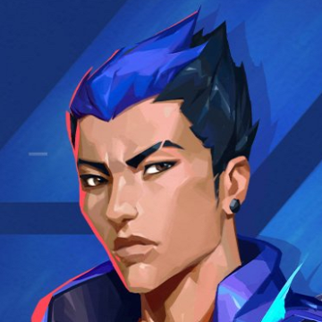

|  | YORU// ROLE DUELIST |
EQUIP to rip an unstable dimensional
fragment from reality. FIRE to throw
the fragment, activating a flash that
winds up once it collides with a hard
surface in the world
EQUIP a rift tether FIRE to send
the tether forward ALT FIRE to place a
stationary tether ACTIVATE to
teleport to the tether's location USE to trigger a fake teleport
EQUIP an echo that transforms into a
mirror image of Yoru when activated
FIRE to instantly activate the mirror
image and send it forward ALT FIRE to place
an inactive echo USE to transform an inactive
echo into a mirror image and send it forward.
Mirror images explode in a blinding flash when destroyed by enemies
EQUIP a mask that can see between dimensions.
FIRE to drift into Yoru's dimension, unable to be
affected or seen by enemies from the outside